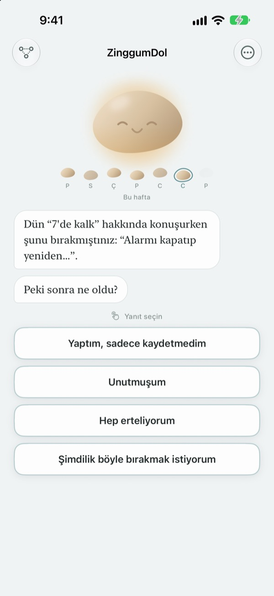
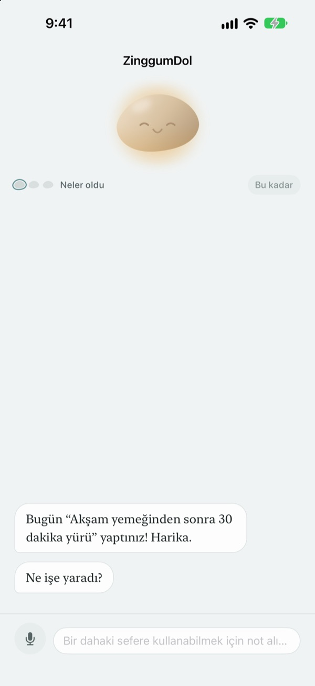
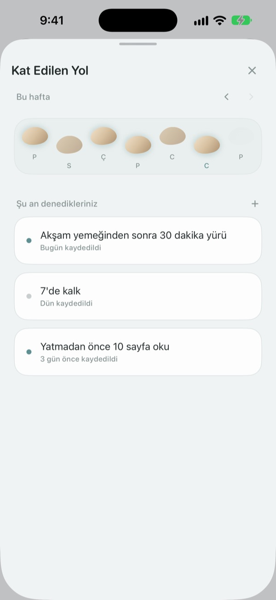
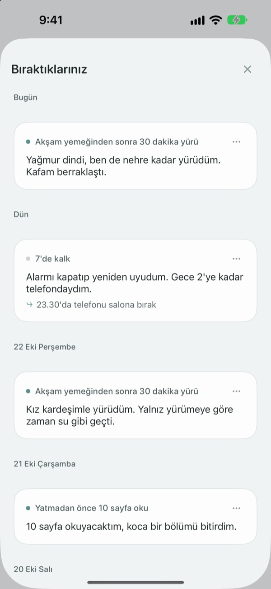

Ayağınızın kayması
derede olduğunuz anlamına gelmez
Hedefinizi kaçırdığınız gün taş önce konuşur. Neyi yanlış yaptığınızı değil, ne olduğunu sorar; yaşananları ve duygularınızı ayrı ayrı size geri verir.
Sohbetler, notlar ve kat ettiğiniz yol ücretsiz. Üyelik yok, reklam yok.

Taşla konuşun
Bu akşam yürüyüşe çıkacaktınız ama olmadı. Bir cevaba dokunun ya da kendiniz yazın; taş, uygulamadaki gibi cevap verir.
Bir gün planlandığı gibi gitmeyince kendinizi mi suçluyorsunuz?
Antrenmanı atladığınız akşam ilk düşünce genelde "bende ne sorun var?" olur. Yakından bakınca mesai uzamış, yağmur yağmış, siz de tükenmişsinizdir. ZinggumDol ne olduğunu ve nasıl hissettiğinizi ayrı adımlarda sorar ve ikisini yan yana koyar. Sebebin iradeniz değil koşullar olduğunu görünce bir sonraki küçük adımı bulmak kolaylaşır.
Önce taş konuşur
Bir hedef belirleyin; taş başardığınız ve takıldığınız günleri takip eder. Bir gün kaçınca "neden yapmadın?" değil "ne oldu?" diye sorar ve geçen sefer anlattıklarınızı hatırlar.
Yazmak ağır geldiğinde sesli söyleyin. Konuşma cihazınızda tanınır, kayıtlar asla saklanmaz.

Günleriniz basamak taşları gibi
Her hafta bir sıra taş olarak uzanır. Basmadığınız günler de orada kalır; hiçbir şey silinmez.
Arada bir iki boşluk olsa da yolun devam ettiğini görürsünüz.

Yazdıklarınıza geri dönün
Ne olduğu, nasıl hissettiğiniz ve bir dahaki sefere ne deneyeceğiniz tarihe göre birikir. Aynı şekilde takıldığınız bir güne bakın, neyin işe yaradığını görün.
Ana ekrandaki bir widget taştan bir söz gösterir; seçtiğiniz saatteki hatırlatma da günü gözden geçirmeye davet eder.

Başlamak için üç adım
- 1
Bir hedef yazın
Örneğin "Akşam yemeğinden sonra 30 dakika yürü".
- 2
Gün bitince uygulamayı açın
Taş gününüzün nasıl geçtiğini sorar. Hatırlatmayla unutmazsınız.
- 3
Dokunun ya da yazın
İstediğiniz an
Şimdilik böyle bırakmak istiyorumile durabilirsiniz.
Bir sohbet nasıl ilerler
- Neler oldu
- Yalnızca olgular: araya ne girdi
- Duygu
- Şu an nasıl hissettiğiniz, beş basamaklı bir ölçekte
- Geriye bakış
- Taş, yaşananları ve duygularınızı ayrı ayrı geri verir
- Sonraki adım
- Küçük bir şeyi kendiniz seçersiniz, beş dakika yeter
- Kapanış
- Gerçekten zor bir günde daha fazla soru sormaz, dinlenmeyi önerir
İstediğiniz an bırakabilirsiniz; o ana kadar söyledikleriniz saklanır.
Sohbet ve yazmak ücretsiz. Daha fazlası için Pro.
Ücretsiz
- Taşla tüm sohbetler
- En fazla üç hedef
- Yazmak yerine konuşmak
- Kat ettiğiniz yol ve yazdığınız her şey
- Widget ve günlük hatırlatma
- Parola ile kilit
ZinggumDol Pro
- İstediğiniz kadar hedef
- Altı taş dokusu arasından seçim
- Notları metin dosyası olarak dışa aktarma
Bir kez alın, hep sizin olsun. Abonelik değil.
Sohbetin ortasında asla ödeme ekranı çıkmaz. Yeni bir cihazda veya yeniden yüklemeden sonra Ayarlar'da Satın Alımları Geri Yükle'ye dokunun.
Sık sorulan sorular
Kaçırdığım her günü açıklamak zorunda mıyım?
Hayır. İstediğiniz an Şimdilik böyle bırakmak istiyorum seçeneğine dokunun, sohbet orada biter. O ana kadar söyledikleriniz saklanır, sonra devam edebilirsiniz.
Yaptım ama uygulama yapmadığımı söylüyor.
Yaptım ama kaydedemedim seçeneğine dokunun. Taş düzeltmeyi kabul eder ve bunun yerine neyin yardımcı olduğunu sorar. İşe yarayan şey saklanır, bir dahaki takıldığınızda size hatırlatılır.
Sesli söylediklerim nereye gidiyor?
Konuşmanız cihazda metne çevrilir, kayıt asla saklanmaz. Desteklenen cihazlarda cümleleriniz daha kolay okunsun diye düzenlenir; bu da cihazda olur.
Kaç hedefim olabilir?
Üç tanesi ücretsiz. Bir hedefle işiniz bitince Kat Edilen Yol'da Bırak ile yer açın. Üçten fazlası için ZinggumDol Pro gerekir.
ZinggumDol Pro bir abonelik mi?
Hayır. Bir kez ödersiniz ve sizindir. Yeni bir cihazda veya yeniden yüklemeden sonra Ayarlar'da Satın Alımları Geri Yükleye dokunun.
Günlüğümü başkası okuyabilir mi?
Hesap yok. Notlarınız yalnızca cihazınızda ve kendi iCloud'unuzda durur; Ayarlar'dan uygulamayı parolayla kilitleyebilirsiniz. Yazdıklarınız asla geliştiriciye gönderilmez. Anonim kullanım istatistiklerini de Ayarlar'dan kapatabilirsiniz.
Hatırlatma saatini nasıl değiştiririm?
Ayarlar'daki Günlük hatırlatma bölümünden açıp kapatır, saati seçersiniz.
Taş bana başardıklarımı da hatırlatır mı?
Evet. Size neyin iyi geldiğini hatırlar ve zor bir günde yakın zamanda başardığınız bir şeyi aklınıza getirir.
Her şeyi nasıl silerim?
Ayarlar'da Tüm notları sile dokunun. Hedefleriniz ve notlarınız, iCloud ile bağlı diğer cihazlarda da dahil olmak üzere kalıcı olarak silinir. Ayarlar ve satın alımlar kalır. Pro ile önce Notları dışa aktar ile bir kopya alabilirsiniz.
Size nasıl ulaşırım?
Uygulamanın Ayarlar'ındaki "Geri bildirim gönder" ile ya da aşağıdaki adrese e-posta göndererek.
Sorunuz ya da öneriniz mi var? leeo@kakao.com adresine yazın.